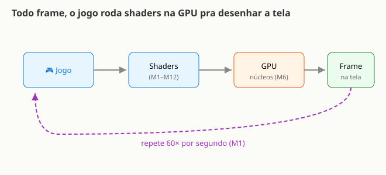
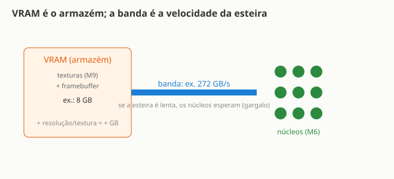

Você já viu a ficha de uma placa — "3072 CUDA cores, 8 GB GDDR6, 272 GB/s, RT cores, Tensor
cores" — e achou grego. Spoiler: cada linha dessas é uma coisa que você já estudou
neste curso. Bora decifrar a sua.
O elo: shader → GPU → jogo
Todo jogo precisa desenhar a tela dezenas de vezes por segundo — 60× ou mais, de acordo com o que
você viu no M1. Para isso, ele chama shaders (M1–M12) a cada frame: o vertex shader posiciona os
objetos, o fragment shader pinta cada pixel. Tudo isso roda nos núcleos da GPU (M6) de forma
massivamente paralela. A ficha técnica da placa responde a uma pergunta só: quanta força
muscular essa GPU tem pra fazer esse trabalho?

Cada frame é um ciclo completo — e a GPU repete esse ciclo 60× por segundo.
Lembra que a GPU roda milhares de cópias do MESMO shader ao mesmo tempo? Esse número de "soldados"
aparece na ficha com um nome. Qual você acha que é? (Dica: olha a primeira linha da ficha abaixo.)
Onde tudo isso mora: a memória (VRAM)
Os shaders precisam de dados pra trabalhar: as texturas que você aplicou nos objetos no M9 ficam
em algum lugar. Esse lugar é a VRAM (Video RAM) — o armazém particular da GPU.
Junto com as texturas, o framebuffer (o quadro sendo desenhado, pixel a pixel)
também mora na VRAM. Quanto mais resolução e quanto maiores as texturas, mais gigabytes ocupam.
Mas não basta ter armazém: alguém precisa levar os dados do armazém até os núcleos que vão
processá-los. A velocidade dessa "esteira" é a banda de memória, medida em GB/s.
Se a banda for baixa, os núcleos ficam esperando os dados chegarem — e esse gargalo limita o
desempenho mesmo que você tenha muitos núcleos rápidos.

VRAM = espaço; banda = velocidade da esteira. Os dois importam — por razões diferentes.
A ficha técnica, linha por linha
Clique em cada linha pra ver o que é — e em que módulo você já viu isso:
3072 CUDA cores / Stream processors
Os milhares de "soldados" que rodam cópias do seu shader em paralelo — mais núcleos, mais pixels e contas ao mesmo tempo. 📚 você viu no Módulo 6.
Clock: 2.5 GHz (boost)
A velocidade de cada núcleo: quantas continhas por segundo ele faz. Núcleos rápidos × muitos núcleos = força bruta. 📚 Módulo 6.
96 TMUs (Texture Mapping Units)
Circuitos dedicados a buscar e filtrar o pedacinho certo da imagem — exatamente o texture2D que você usou. 📚 Módulo 9 / Módulo 11.
48 ROPs (Render Output Units)
Escrevem o pixel final na tela: testam profundidade (Z-buffer) e misturam cores. Hardware fixo. 📚 Módulo 11.
8 GB GDDR6 (VRAM)
O armazém onde as texturas e o quadro sendo desenhado (framebuffer) moram. Mais resolução e texturas maiores ocupam mais GB. 📚 Módulo 9 + a seção de memória acima.
Banda de memória: 272 GB/s
A velocidade da "esteira" que leva os dados da VRAM pros núcleos. Se for lenta, os núcleos ficam esperando — gargalo. (Veja a seção de memória acima.)
24 RT cores
Hardware dedicado a ray tracing: simular o caminho da luz pra reflexos e sombras realistas — uma evolução da luz que você calculou à mão. 📚 Módulo 10 / Módulo 12.
96 Tensor cores
Hardware pra contas de IA (multiplicar matrizes em massa). Em jogos, usado pra upscaling (ex.: DLSS) — a GPU como calculadora paralela. 📚 Módulo 13.
TDP: 200 W
O calor máximo que a placa gera em uso intenso — indica quanto de energia ela pode consumir, e por isso ela tem cooler e ventoinhas. Mais força costuma custar mais watts.
Onde tudo se junta: FPS
Todos esses números servem a um só objetivo: frames por segundo. Mais núcleos, banda mais rápida
e clock mais alto significam mais frames por segundo — ou a mesma suavidade em resoluções mais altas,
com texturas maiores, com mais objetos na cena. Lembra do M1, onde você viu o jogo rodando 60× por
segundo? É exatamente aqui que a ficha técnica se traduz em experiência real: cada número define
quanto trabalho a GPU consegue terminar antes de precisar entregar o próximo frame.
Mais VRAM = mais FPS?
Não necessariamente. VRAM é espaço; se já sobra, mais não acelera nada. O que vira
FPS são núcleos + banda + clock. VRAM importa pra não faltar em resoluções/texturas altas
— quando falta, a placa começa a usar a RAM do sistema, que é muito mais lenta, e aí o desempenho
despenca.
Por que uma marca diz "CUDA core" e outra "Stream processor"?
Mesma ideia (um núcleo paralelo), sotaques de fabricante — igual GLSL × HLSL que você viu no
curso. O conceito por baixo é o mesmo: muitos processadores pequenos trabalhando em paralelo.
RT e Tensor cores fazem o jogo inteiro?
Não, são especialistas; o grosso do trabalho ainda são os shaders nos núcleos comuns. RT cores
aceleram o cálculo de raios de luz; Tensor cores aceleram IA e upscaling. Se o jogo não usa nenhum
dos dois, esses cores ficam parados.
Não escolha uma placa por UM número só (tipo "tem mais GB!"). É o conjunto — e depende do jogo e da
resolução que você quer rodar. Uma placa com muita VRAM mas banda e núcleos modestos pode ser mais
lenta do que uma com menos VRAM e mais núcleos rápidos.
Um jogo = shaders rodando na GPU toda frame; a ficha técnica diz quanto músculo a GPU tem pra isso.
Núcleos (CUDA/Stream) rodam teus shaders em paralelo (M6); TMU busca textura (M9), ROP escreve o pixel (M11).
VRAM = espaço (armazém); banda = velocidade (esteira). São coisas diferentes.
Ligue cada componente ao seu papel (escreva a letra):
( ) CUDA core A. busca textura (M9)
( ) TMU B. núcleo paralelo que roda o shader (M6)
( ) ROP C. escreve o pixel final (M11)
( ) VRAM D. armazém de texturas
( ) RT core E. ray tracing (luz realista)
( ) Tensor core F. contas de IA/upscaling (M13)
Você não só faz shaders — agora entende a máquina que os roda e consegue ler a ficha de qualquer
placa. Da próxima vez que vir uma na loja, cada linha vai fazer sentido.